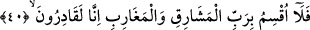

getirilmesi, kâfirlerin bütün cennetlerden kovulacağına işâret etmek içindir. Cennetin
“naîm” şeklinde vasfedilmesi, her cennetin nimetle dolu olduğuna ve naîm cennetinin
rahatlığından kovulan kimsenin cehennemin kederine düşeceğine işâret etmek içindir.
“Küll/hepsi” kelimesinin getirilmesi, kâfirlerin arasından, yukarıda zikredilen alaylı
sözlerinin ardından îman edecek, Allah’a ve Peygamberi’ne itâat edecek kimseler
bulunursa, bunların cennete girmeyi ummaya haklarının olduğuna ve îman etmeyenler
kim olursa olsun tamamının burada reddedildiğine işâret etmek içindir.
“Şüphesiz biz onları bildikleri şeyden yarattık.” Bu ifâde “Andolsun ilk yaratılışı
bildiniz.” (el-Vâkıa, 56/62) âyet-i kerîmesinde söylenen sözlerin aynısıdır. Bu ifâde,
yeni bir cümle başlangıcıdır. Bu sebeple kırâat imamı es-Secâvendî, yukarıdaki
“kellâ” kelimesinin üzerine, cümle o noktada tamam olduğu için vakf alâmetlerinden
“ta” harfini koymuştur.
Bu cümle aynı zamanda, daha sonra gelecek öldükten sonra dirilmeyi ve amellerin
karşılığını almayı inkâr etmeleri, Peygamber (s.a.)’i ve ona inen vahyi alaya almaları,
cennete gireceklerini alaylı bir üslupla iddiâ etmeleri sebebiyle küfre girdikleri için
kendilerini helâk etmeye, yerlerine başka bir kavim getirmeye Allah Teâlâ’nın kâdir
olduğunu beyân etmeye bir giriş için de getirilmiş olabilir. Zîrâ Cenâb-ı Hakk’ın onları
-bildikleri üzere- önce meniden, sonra kan pıhtısından, sonra bir çiğnem etten yaratmaya
olan kudreti, daha sonra yukarda sıralananları yapmaya da kadir olduğuna bir delildir.
Nitekim aşağıda kırkıncı âyette yer alan “felâ uksimu” âyetindeki “fâ-i fasîha” da bunu
açıkça ifâde etmektedir.
et-Tevilatü’n-necmiyye’de bu âyet-i kerîme şöyle tefsir olunuyor: “Biz onları ebedî
düşmanlık sebebiyle celâl ve kahır eli olan sol elimizle ezelî bedbahtlıktan yarattık.
Onlar nasıl olur da ebedî muhabbet sebebiyle celâl ve lütuf elimiz olan sağ elimizle
yarattığımız saâdet ehlinden kişilerin mekânı olan cennete girebilirler. Çünkü böyle bir
durum ilâhî hikmete ve sermedî irâdeye aykırı olur.”
Menî ve çamura itibar yoktur. Çünkü herkesin aslı menî ve çamurdandır. Asıl itibar
edilmesi gereken, Allah Teâlâ’ın seçmesi ve kişinin mârifetteki husûsiyetidir. Kim
Allah Teâlâ’yı tanır, mârifete ererse O’nun civârında yerini alır. Çünkü o kişinin toprağı
gerçekte cennet toprağındandır, rûhu melekûtun nûrundandır. Kim de Allah Teâlâ’yı
tanımazsa O’ndan uzakta kalır. Çünkü böyle bir kimse gerçekte nâr/ateş âlemine
mensuptur. Herkes zâten kendi aslına döner.
40. Şu hâlde (işin gerçeği) öyle (umdukları gibi) değil! Doğuların ve batıların
Rabbine yemin ederim ki, bizim gücümüz yeter.
“Fe lâ uksimu”. Daha evvel de benzerleri geçtiği gibi bu ifâde “Yemin ederim ki”